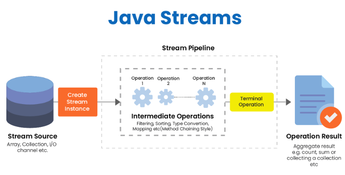
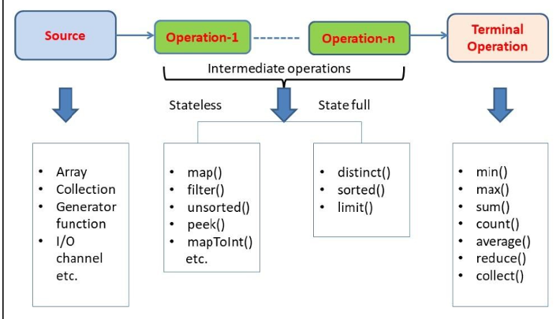
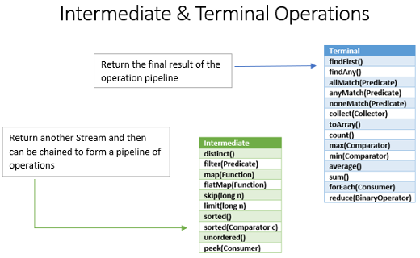

Uso de flujos¶
Los Streams son una interesante incorporación a Java, ya que me aportan varias ventajas:
- Hacen que el código para procesar los datos sea uniforme, conciso y legible. Tiene una forma similar a SQL.
- Cuando se trabaja con grandes colecciones, los flujos paralelos proporcionan una ventaja de rendimiento.
{kind=link}

De forma genérica existen 3 partes que componen un Stream:
- Un Stream funciona a partir de una lista o colección, que también se la conoce como la fuente de donde obtienen información.
- Operaciones intermedias como por ejemplo el método filter, que permite hacer una selección a partir de un predicado.
- Operaciones terminales, como por ejemplo los métodos
max,min,forEach,findFirstetc.
{kind=link}

Se pueden clasificar las funciones relacionados con Streams en dos grandes bloques: intermedias y finales.
{kind=link}

Son perezosas
Las operaciones intermedias son perezosas (lazy). Esto significa que se invocarán solo si es necesario para la ejecución de la operación del terminal.
List<String> lista = Arrays.asList(“abc1”, “abc2”, “abc3”);
Stream<String> stream = lista.stream().filter(valor-> {
System.out.println("Procesando elemento: " + valor);
return valor.contains("2");
});
Como tenemos una fuente de tres elementos, podemos suponer que el método filter() se llamará tres veces y se imprimirá por pantalla “Procesando elemento: ” 3 veces. Sin embargo, ejecutar este código no imprime nada por pantalla, por lo que el método filter() ni siquiera se llamó una vez. La razón por la que falta la operación de la terminal. Si en vez de eso llamamos al final a una operación terminal:
List<String> lista = Arrays.asList(“abc1”, “abc2”, “abc3”);
long contador = lista.stream().filter(valor-> {
System.out.println("Procesando elemento: " + valor);
return valor.contains("2");
}).count();
filter() 3 veces y al método count() una vez. Esto se debe a que la canalización se ejecuta verticalmente.
Operaciones intermedias¶
| Operación | Descripción |
|---|---|
| distinct() | Elimina los valores duplicados del Stream. |
| filter(Predicate) | Los elementos que coinciden con el filtro de Predicate se mantienen en el stream de salida para las operaciones. |
| takeWhile(Predicate) | Similar a filter. Con la diferencia de que la primera vez que se evalúa a falsa la condición, deja de comprobar el resto de elementos. |
| dropWhile(Predicate) | Eliminará o filtrará cualquier elemento mientras coincida con la condición del Predicate. Cuando la condición se evalúa como falso la primera vez, la condición ya no se comprueba. |
| limit(long maxSize) | Reduce el stream al tamaño especificados en el parámetro. |
| skip(long n) | Este método omite elementos, es decir, no formarán parte del stream resultante |
Además de estas operaciones básicas, hay otras que son de gran interés:
Peek()¶
Este método existe principalmente para la depuración del programa, donde se desea ver los elementos a medida que pasan por un punto determinado en el pipeline.
peek() también se utiliza cuando queremos alterar el estado interno de un elemento (aunque esto no es muy común).
Stream.of("one", "two", "three", "four")
.filter(e -> e.length() > 3)
.peek(e -> System.out.println("Filtered value: " + e))
.map(String::toUpperCase)
.peek(e -> System.out.println("Mapped value: " + e))
.collect(Collectors.toList());
Sorted()¶
Se utiliza para ordenar los elementos del stream. Recibe como parámetro una expresión lambda de tipo Comparator para que podamos indicar la lógica de la ordenación.
Map()¶
El método map recibe como parámetro una expresión lambda de tipo Function, por lo que debemos especificar una función que recibe como parámetro de entrada cada elemento del stream, y devuelve un objeto que puede ser un tipo de dato distinto o el mismo.
La función se aplica a cada uno de los elementos del stream para realizar alguna transformación sobre cada elemento y devuelve otro Stream sobre el cual puedes seguir trabajando. Se utiliza para modificar el contenido del stream.
map() devuelve un stream nuevo que consta de los resultados de aplicar la función dada a los elementos del stream.
List<Integer> list = Arrays.asList(3, 6, 9, 12, 15);
//Mostramos el nuevo stream devuelto por map
list.stream().map(number -> number * 3).forEach(System.out::println);
//[9 18 27 36 45]
FlatMap¶
Cuando nos encontramos con estructuras más complejas, como por ejemplo una lista con otra lista, trabajar con map() no es suficiente, por ello, utilizamos flatMap() que lo que hace es "aplanar" listas anidadas y quedarnos con un stream plano.
Es una función que recibe una entrada y devuelve varias salidas para esa entrada. Esa es la diferencia con respecto a map() que recibe solo un parámetro de entrada y devuelve una salida.
flatMap() es una operación intermedia y devuelve un nuevo Stream. Devuelve un Stream que consiste en los resultados de reemplazar cada elemento del stream dado con el contenido de un stream mapeado producido al aplicar la función de mapeo provista a cada elemento. La función de mapeo utilizada para la transformación en flatMap() es una función sin estado y solo devuelve una secuencia de nuevos valores.
En el siguiente ejemplo el programa usa la operación flatMap() para convertir una lista de una lista List<List<Integer>> a una lista List<Integer>.
List<Integer> list1 = Arrays.asList(1,2,3);
List<Integer> list2 = Arrays.asList(4,5,6);
List<Integer> list3 = Arrays.asList(7,8,9);
List<List<Integer>> listOfLists = Arrays.asList(list1, list2, list3);
List<Integer> listOfAllIntegers = listOfLists.stream()
.flatMap(x -> x.stream())
.collect(Collectors.toList());
System.out.println(listOfAllIntegers);
//[1, 2, 3, 4, 5, 6, 7, 8, 9]
Operaciones terminales¶
Las operaciones terminales significan el final del ciclo de vida del steam. Lo más importante para nuestro escenario es que inician el trabajo en la tubería.
forEach()¶
Recorremos cada elemento del stream para realizar alguna acción con él.
list.stream().map(number -> number * 3).forEach(System.out::println);
collect()¶
Es una operación terminal, se utiliza para indicar el tipo de colección en la que se devolverá el resultado final de todas las operaciones realizadas en el stream.
List<String> lista = Arrays.asList("Texto1", "Texto2");
Set<String> set = lista.stream().collect(Collectors.toSet());
Clase Optional
Optional es una clase genérica, cuyo propósito es ser un contenedor para un valor que puede o no ser nulo. Fue creado por los ingenieros de Java, para abordar el problema o excepción tan conocida la NullPointerException.
La documentación oficial de Java dice que este tipo está pensado principalmente para un uso como tipo de retorno de método, bajo condiciones específicas.
Optional trata de resolver el problema cuando hay ausencia de resultados o datos y no queremos que esto sea un error. Por ejemplo, no todas las personas tienen 2o apellido. Esto sería válido para un optional, pero por ejemplo todo el mundo tenemos fecha de nacimiento, esto sí que es un error.
findFirst()¶
Se utiliza para devolver el primer elemento encontrado del stream. Se suele utilizar en combinación con otras funciones cuando hay que seleccionar un único valor del stream que cumpla determinadas condiciones.
findFirst devuelve un objeto de tipo Optional para poder indicar un valor por defecto en caso de que no se pueda devolver ningún elemento del stream.
toArray()¶
Con este método se puede convertir cualquier tipo de Collection en un array de forma sencilla.
min()¶
Con min se obtiene el elemento del stream con el valor mínimo calculado a partir de una expresión lambda de tipo Comparator que indicamos como parámetro.
min devuelve un objeto de tipo Optional para poder indicar un valor por defecto en caso de que no se pueda devolver ningún elemento del stream.
max()¶
Con max se obtiene el elemento del stream con el valor máximo calculado a partir de una expresión lambda de tipo Comparator que indicamos como parámetro de la expresión.
max devuelve un objeto de tipo Optional para poder indicar un valor por defecto en caso de que no se pueda devolver ningún elemento del stream.
Match()¶
La API Stream ofrece un práctico conjunto de instrumentos para validar elementos de una secuencia de acuerdo con algún predicado. Para hacer esto, se puede usar uno de los siguientes métodos: anyMatch(), allMatch(), noneMatch().
Sus nombres se explican por sí mismos. Esas son operaciones de terminal que devuelven un valor booleano:
boolean alMenosUnoContieneHMinuscula = list.stream().anyMatch(element -> element.contains("h")); // verdadero
boolean todosContienenHMinuscula = list.stream().allMatch(element -> element.contains("h")); // falso
boolean ningunoContieneHMinuscula = list.stream().noneMatch(element -> element.contains("h")); // falso
Reduce()¶
La API Stream permite reducir una secuencia de elementos a algún valor de acuerdo con una función específica con la ayuda del método reduce() del tipo Stream. Este método toma dos parámetros: primero, valor de inicio, segundo, una función de acumulador.
Imagina que tienes un List y quieres tener una suma de todos estos elementos y algún Integer inicial (en este ejemplo 23). Entonces, puede ejecutar el siguiente código y el resultado será 26 (23 + 1 + 1 + 1).
List<Integer> integers = Arrays.asList(1, 1, 1);
Integer reducido = integers.stream().reduce(23, (a, b) -> a + b);
Collect()¶
La reducción también puede proporcionarse mediante el método collect() de tipo Stream. Esta operación es muy útil en el caso de convertir un stream en una colección o un mapa y representar un stream en forma de una sola cadena. Hay una clase de utilidad Collectors que proporciona una solución para casi todas las operaciones de recolección típicas. Para algunas tareas no triviales, se puede crear un recopilador personalizado.
Lista lista de resultados<br>= list.stream().map(element -> element.toUpperCase()).collect(Collectors.toList());
collect() para reducir un Stream a List.
Ventajas e inconvenientes¶
Ventajas de Streams
- Código conciso y más limpio.
- Programación funcional: se programa escribiendo el "qué" en lugar del "cómo" para que sea comprensible de un vistazo.
- Puede leer y comprender fácilmente el código que tiene una serie de operaciones complejas.
- Ejecutar tan rápido como bucles for (o más rápido con operaciones paralelas)
- Ideal para listas grandes.
Desventajas
- Excesivo para pequeñas colecciones.
- Difícil de aprender si está acostumbrado a la codificación de estilo imperativo tradicional
Actividades¶
-
AC 1001 (RA6 / IC1 / 3p). Crea una lista de números enteros, utiliza programación funcional para filtrar y obtener solo los números pares.
-
AC 1002 (RA6 / IC1 / 3p). Crea una lista de números enteros, utiliza programación funcional para obtener la suma de los cuadrados de todos los elementos.
-
AC 1003 (RA6 / IC1 / 3p). Crea una lista de cadenas, utiliza programación funcional para convertir todas las cadenas a mayúsculas.
-
AC 1004 (RA6 / IC1 / 3p). Crea una lista de números, utiliza programación funcional para verificar si al menos uno de los números es mayor que 10.
-
AC 1005 (RA6 / IC1 / 3p). Crea una lista de cadenas, utiliza programación funcional para contar cuántas cadenas tienen más de 3 caracteres.
-
AC 1006 (RA6 / IC1 / 3p). A partir de una lista de nombres, conviértelos todos a mayúsculas, ordénalos alfabéticamente y muestra cada paso intermedio utilizando
peek. -
AC 1007 (RA6 / IC1 / 3p). Disponemos de una lista de productos con nombre y precio, ordénalos de menor a mayor precio utilizando
sortedy muéstralos en la consola. -
AC 1008 (RA6 / IC1 / 3p). Dada una lista de números enteros, eleva cada número al cuadrado y luego devuelve una lista con los resultados usando
map. -
AC 1009 (RA6 / IC1 / 3p). A partir de una lista formada por frases, obtener una nueva lista con todas las palabras almacenadas de forma individual utilizando
flatMap. -
PR 1010 (RA6 / IC1 / 5p). Crea una gestor de libros con el título y el nombre de su autor o autores, descripción y año de publicación. Luego da la posubilidad de obtener una lista con el nombre de todos los autores que hay sin repetir, los libros por autor, añadir nuevos libros y borrar libros. Verifica que el año sea correcto.
-
PR 1011 (RA6 / IC1 / 5p). Dado un listado de empleados, cada uno con un nombre y un salario, debes escribir un programa en Java que realice las siguientes operaciones utilizando programación funcional (con streams):
- Filtra a los empleados cuyo salario sea superior a 3000.
- Obtén una lista con los nombres de los empleados que cumplen con el criterio de salario anterior.
- Ordena alfabéticamente los nombres de los empleados filtrados.
- Calcula el salario promedio de estos empleados.